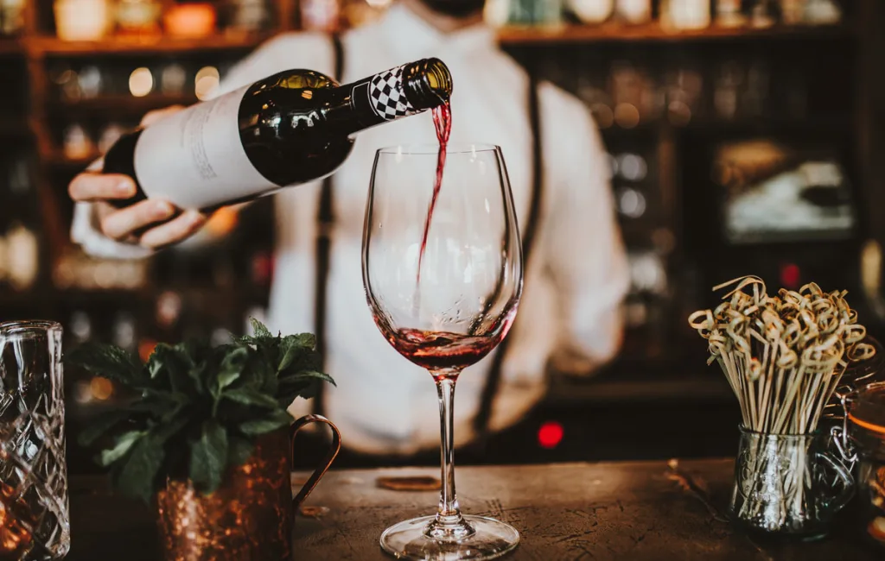

Kista vinbar

Välkommen
Kista vinbar är en elegant och mysig bar för livsnjutare.
Vi erbjuder ett stort dryckesutbud med enklare tilltugg.
Vi riktar oss till finsmakare som vill njuta av ett glas vin i en avkopplande miljö.
Vi vill att vår hemsida speglar samma atmosfär som vår lokal, en dov, lyxig och romantisk känsla.
Hemsidan ska även vara enkel att navigera i, där man enkelt ska kunna boka bord, kolla på våra menyer och läsa om oss och våra tidigare erfarenheter.
Kista Vinbar